缓存管理策略综述
在计算机系统设计实践中，我们常常会遇到下图所示架构：
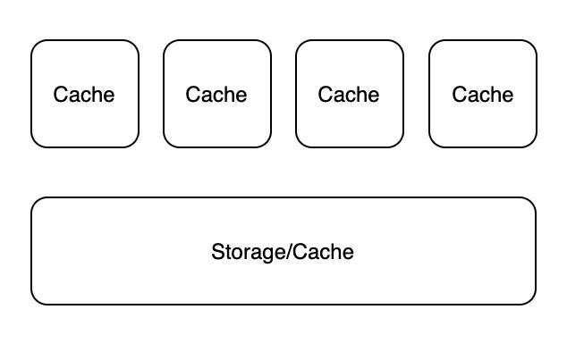
为了解决单个存储器读吞吐无法满足要求的问题，常常需要在存储器上面增加一个或多个缓存。但由于相同的数据被复制到一个或多个地方，就容易引发数据一致性问题。不一致的数据可能出现在同级 Cache 之间 (Cache Coherence) 和上下级 Cache 之间。解决这些数据一致性问题的方案可以统称为 Cache Policies。从本质上看，所有 Cache Policies 的设计目的都可以概括为：在增加一级缓存之后，系统看起来和没加缓存的行为一致，但得益于局部性原理，系统的读吞吐量提高、时延减少。
本文将探讨四个场景：
- Cache Policy In Single-core Processor
- Cache Coherence in Multi-core Processor
- Cache Policy in Cache/DB Architecture
- Cache Policy in Distributed DBMS Architecture
Cache Policy in Single-core Processor
在单核 CPU 中，只有一套 Cache，因此只要确保写入 Cache 中的数据也写入到 Memory 即可。
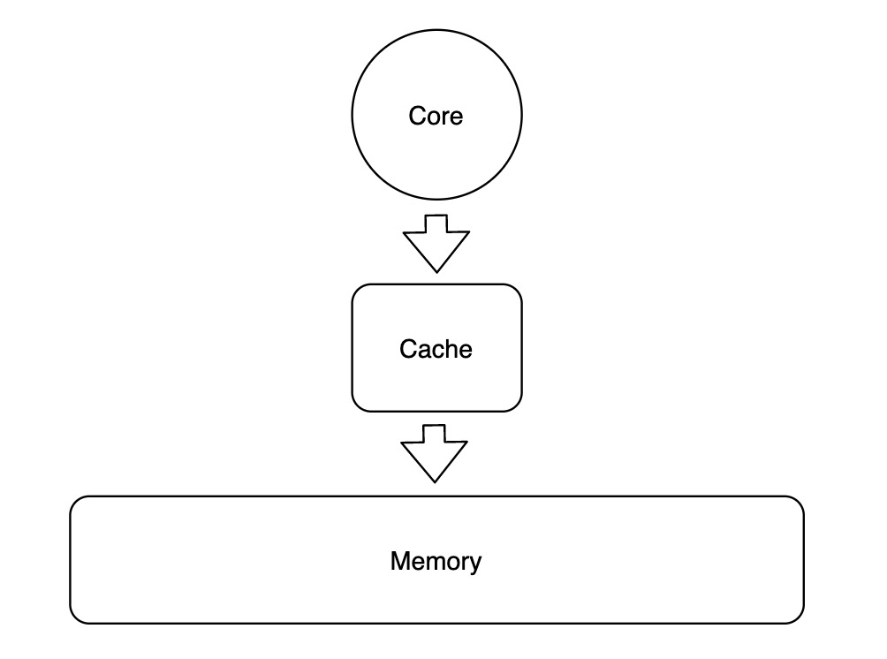
补充一些概念定义：数据在 Cache 与 Memory 之间移动的最小单位通常在 32 - 128 字节之间，Memory 中对应的最小单位数据称为 Cache Block，Cache 中与单个 Cache Block 对应的存储空间称为 Cache Line，在 Cache 中除了存储 Block 数据，还需要存储 Block 对应的唯一标识 $T$ (Tag)，以及一个用于标记 Cache Line 是否有数据的有效位 $V$。完整对应关系如下图所示：
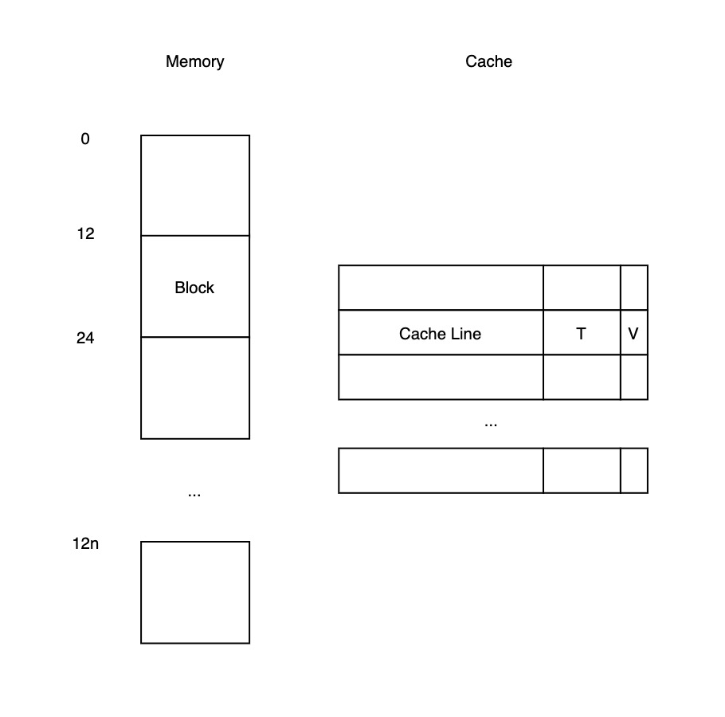
单核处理器下的 Cache Policy 要解决的问题可以被概括为：
CPU 从 Cache 中读到的数据必须是最近写入的数据
要满足定义，最简单的方式就是 Write-Through，即每次写入 Cache 时，也将数据写到 Memory 中。当之前写入的某数据 $D$ 在某时刻被置换后，可以保证再次读入的数据是最近写入的数据。这里有个很明显的改进空间：只需要在数据 $D$ 被置换前将其写入 Memory 即可。为此我们可以为每个 Cache Line 增加一个脏位 (Dirty Bit)，即：
当其被写入时置为 1；当其被置换时，如果脏位为 1，则写出到 Memory，否则直接丢弃即可。以上所述的 Cache Policy 就是 Write-Back Policy，也是目前在单核处理器中被广泛采用的 Cache Policy。
Cache Coherence in Multi-core Processor
在多核 CPU 中，如果这些核共用一套缓存，由于单套 Cache 的吞吐跟不上，无法达到最佳性能。
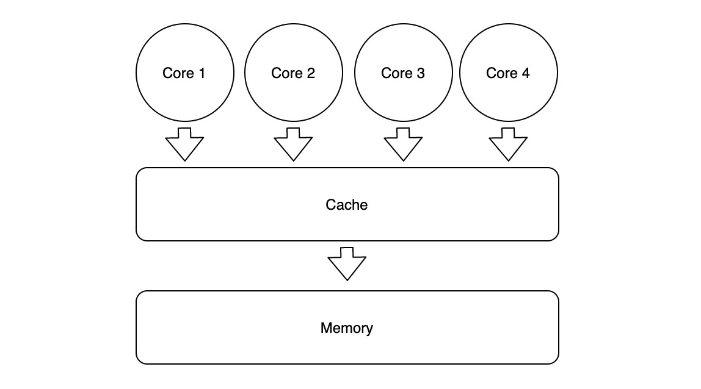
这时候就需要在每个核上再加一级私有缓存：
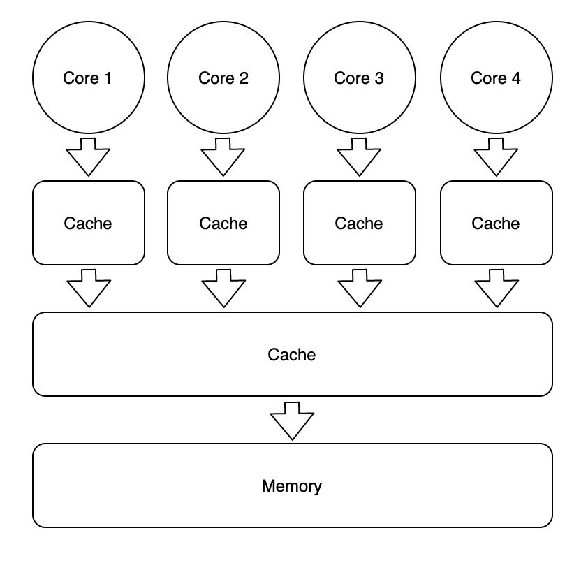
假设在一个 4 核处理器中，内存地址 $MA$ 处最开始存储着整数 0，这时每个核都需要完成一个 read-modify-write 的操作，如下所示：
| Core 0 | Core 1 | Core 2 | Core 3 |
|---|---|---|---|
| LW Reg <= A Reg ++ SW Reg => A |
LW Reg <= A Reg ++ SW Reg => A |
LW Reg <= A Reg ++ SW Reg => A |
LW Reg <= A Reg ++ SW Reg => A |
如果不加任何协议，当 4 个核都完成相应的操作后，内存地址 $MA$ 处可能存储着 1、2、3、4 中的任意值，这将影响并行计算的正确性。要保证并行计算的正确性，就必须保证每个核私有缓存之间的数据一致且永远是最新版本，可以想象，多核处理器上的各核之间必须遵守某种数据读写协议，才可能在获得多核计算力的同时维持计算的正确性，我们称这种数据读写协议为 Cache Coherence Protocols。
Cache Coherence 的要求：
- 从内存地址 $MX$ 将数据 $D$ 读入到核 $C1$ 的 Cache 中，在其它核没有写入数据到 MX 的情况下，读入的数据 $D$ 必须是 $C1$ 最近写入的数据值。(单核 CPU 的 Cache Coherence 定义)
- 如果 $C1$ 写入数据到 $MX$ 中，经过足够长的一段时间后，在其它核没有写入数据的情况下，$C2$ 必须能够读入 $C1$ 写入的数据值。
- 针对地址 $MX$ 中的来自于各个核的写入操作必须被序列化，即在每个核眼中，数据的写入顺序相同。
How To Get Coherence
要在多核 CPU 中实现 Cache Coherence，需要解决的根本问题是：让每个读操作在执行前能够获得所有最近的写操作历史。
从写操作传递信息的内容出发，可以将 Cache Coherence Protocols 划分为两类：Write-Update 和 Write-Invalidate。Write-Update 就是在写入数据时，将所有其它同级 Cache 中相同的 Cache Line 更新成最新数据；Write-Invalidate 就是在写入数据时，将所有其它同级 Cache 中相同的 Cache Line 标记为不合法。
从写操作传递信息的方式出发，可以将 Cache Coherence Protocols 划分为两类：Snooping 和 Directory。Snooping 将写数据的信息通过共享总线 (Shared Bus) 广播给其它同级 Cache，同时保证写操作的顺序一致；Directory 在内存中为每个 Cache Line 标记额外的元信息，每个 Cache Line 的读写控制分而自治，将写数据的信息通过点对点的方式传递。
任何一种 Cache Coherence Protocol 基本都可以从这两个维度被归类为以下四类：
| Write-Update | Write-Invalidate | |
|---|---|---|
| Snooping | Write-Update Snooping | Write-Invalidate Snooping |
| Directory | Write-Update Directory | Write-Invalidate Directory |
Write-Update Snooping Example
Cache 中的每条 Cache Line，除了记录数据本身，额外使用 1 bit 标记 $V$ 是否有效，以及若干 bits 用于存储 Cache Block 的唯一标识 $T$。多个核内部的 Cache 通过一条共享总线与 Memory 相连，如下图所示：
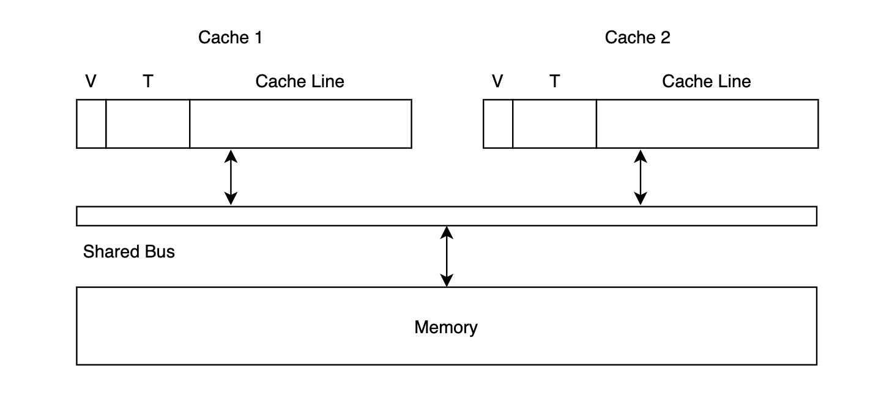
- 读取数据时，如果 Cache Line $T$ 在 Cache 中的标记位 $V$ 为 0，即触发 Cache Miss，Cache 会向 Memory 发起读请求；同时其它核的 Cache 会在总线上监听信息，但它们并不关心读请求，因此这个过程没有其它事情发生；如果目标 Block 在 Cache 中的标记位 $V$ 为 1，则直接返回。
- 写入数据时，Cache 会将写请求通过总线发送到 Memory 中，并将 Memory Block 中 $T$ 对应 Cache Line 中的数据更新；同时，其它核的 Cache 会在总线上监听信息，如果发现内部也存有标识符为 $T$ 的 Memory Block，则将其对应的 Cache Line 更新。
- 如果多个核同时发送针对 Cache Line $T$ 的写请求，这时只有一个核可以获得总线的使用权，当整个 Write-Update 完整过程执行完毕后，其它核才能继续争夺总线的使用权。这也保证了 Cache Coherence 定义中的第三条。
Optimization #1: Memory Writes
在原始的 Write-Update Snooping Example 中，我们采用 Write-Through 的方式，每当某个 Cache Line 写入数据时，都同时写穿到 Memory 中。本身 Memory 距离较远，读写数据时间长，就容易成为瓶颈，因此如果能够尽量使用类似 Write-Back 的策略，将数据保留在 Cache 中，用脏位 (dirty bit) 标记，等到其需要被替换时，再写入 Memory 中，就能优化该协议的整体性能。
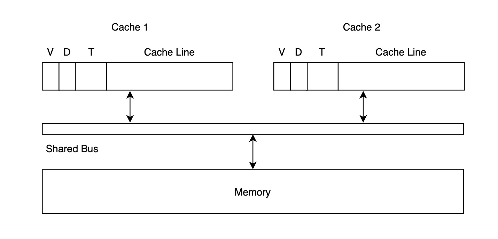
- 读取数据时，如果 Cache Line $T$ 在 Cache 中的标记为 $V$ 为 0，即触发 Cache Miss，Cache 会向 Memory 发起读请求；如果其它核的 Cache 已经拥有 $T$ 对应的数据，则会截获该请求，直接将自己的数据传输给请求方，减少读穿。
- 写入数据时，Cache 会首先将自身 $T$ 对应的数据更新，并且将脏位置为 1；然后将写数据的信息传入共享总线，这时其它核的 Cache 会同时监听到该消息。如果另一个核的 Cache 内部有相同的 Cache Line $T$，若它的脏位为 1，则会将 $T$ 更新成为刚刚监听到的值，同时将脏位置为 0；若它的脏位为 0，则会直接修改数据。
- 如果 Cache 已满，被迫清出，则通过缓存置换算法选出 Cache Line $T'$。若 $T'$ 的脏位为 1，则先将数据写出到缓存。
总而言之：以上修改减少了读穿和写穿的频率，从而提高整体性能。
Optimization #2: Bus Writes
尽管增加 Opmization #1能减少读写 Memory 的资源消耗，但每次写数据时，依然要将信息发送到共享总线。大多数情况下，某 Cache Line $T$ 对应的数据只有单个核会访问，因此如果能够提前识别其它核的 Cache 是否拥有该数据，避免向总线写入数据，就可以进一步提高整体性能。正因为此，我们可以尝试再加入一个共享标记位 (Shared Bit)，用于标记目标 Cache Line 是否同时存在于其它核的 Cache 中，如下图所示：
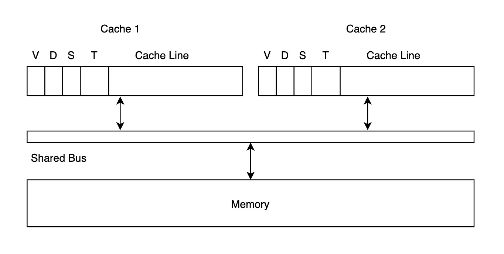
- 读取数据时，如果发现其它 Cache 已经拥有 $T$ 对应的数据，则二者都将共享标记位置为 1。
- 写入数据时，如果共享标记位为 1，则将写信息发送到共享总线；如果共享标记位为 0，则直接修改本地 Cache Line 的值即可，并将脏位标记为 1，无需广播。
Write-Invalidate Snooping Example
利用 Write-Update Snooping Example + Dirty Bit + Shared Bit 的结构，我们来看 Write-Invalidate Snooping 的工作模式。
- 读取数据时，与 Write-Update Snooping 类似，$V$ 为 0 时触发 Cache Miss；$V$ 为 1 时直接读取本地缓存。
- 写入数据时，若 Cache Line $T$ 的共享标记位 $S$ 为 0，则只写入本地缓存；若共享标记位 $S$ 为 1，则写入本地缓存的同时将写入信息发送到共享总线，其它拥有 $T$ 的 Cache 将有效位 $V$ 置为 0 即可。由于 Write-Invalidate 不需要更新其它 Cache 中的数据，因此发送到总线中的信息只需包含 Cache Line 的标识符 $T$ 即可。
与 Write-Update Snooping 不同，Write-Invalidatie Snooping 每次写入数据后，Cache 中 Cache Line $T$ 的共享标记位 $S$ 总是为 0，只有一个 Cache 中其对应的有效位 $V$ 为 1，即全局只有一个 Cache 拥有有效数据。
Update V.S. Invalidate Coherence
Update 与 Invalidate 究竟二者谁更优异？这需要实际运行模式的检验，考虑以下 3 种常见场景：
| 场景 | Update | Invalidate |
|---|---|---|
| 瞬间针对同一个地址大量更新数据 | ❌ 每次写入都需要更新其它 Cache ($S = 1$) | ✅ 第一次写入之后就不需要再更新 |
| 在同一个 Cache Line 上更新不同部分 (Words) | ❌ 每个 WORD 写入都需要更新其它 Cache ($S = 1$) | ✅ 第一次写入之后就不需要再更新 |
| 生产者/消费者 | ✅ 生产者修改完数据后，直接更新消费者的数据 | ❌ 每次生产完数据都需要 Invalidate；每次消费都会发生 Cache Miss，更多的总线吞吐 |
尽管二者看起来各有千秋，在实践中普遍被采用的还是 Invalidate Coherence。原因在于：在多核 CPU 的运行时中，一个最频繁的操作就是将一个 Thread 从一个核移动到另一个核上运行。分析一下这种场景：
| 场景 | Update | Invalidate |
|---|---|---|
| 线程转移 | ❌ 线程在新的核上，总是需要更新旧核缓存 | ✅ 第一次写入之后，旧核中的缓存全部失效 |
MSI Coherence
在 Write-Invalide Snooping Example 中，我们在每个 Cache Line 上使用了 3 个标记位：有效位 $T$、脏位 $D$ 和共享位 $S$，一共可以表示 8 个状态。每个 Cache Line 真的需要 8 个状态吗？我们发现实际上每个 Cache Line 只需 3 个状态就足够实现 Write-Invalide Snooping Protocol：
- MODIFIED：修改且独占
- SHARED：共享
- INVALID：无效
其状态机如下图所示：
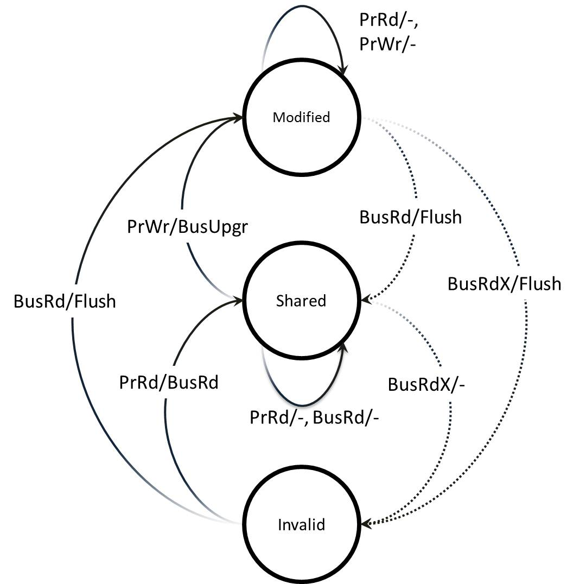
表示 3 个状态只需要 2 bits，这种更简单的 Write-Invalid Snooping Protocol 被称为 MSI。尽管 MSI 能达到目的，但它在多个场景下仍存在效率问题，因此也有相应的改进版本 MOSI、MOESI 被提出，这里不再赘述。
Directory Protocols
由于 Snooping 依赖基于共享总线的广播和监听，当 CPU 核数大于 8 个以后，共享总线就需要处理更多信号，解决更多冲突，成为瓶颈。因此抛弃广播网络、拥抱点对点网络通信是获得扩展性的前提。失去广播网络后，如何保证对同一个 Block 的写入顺序在各 CPU 核中保持一致，又重新成为难题。
Directory Protocols 正是为解决上述问题而被提出。要序列化对同一个 Block 的数据写入顺序，就必须将这些写入操作集中到一个节点上，但这并未要求对不同 Block 的写操作集中到一个节点上。于是我们可以将不同 Block 的控制权分散到不同分片中，这里的分片就是所谓的 Directory，每个 Directory 中包含若干个 Block 的控制信息。每个 Block 在 Directory 中记录的信息包含两个部分：
- Dirty Bit：是否被修改且未写回 Memory
- Sharing Vector：哪些 Cache 拥有该 Block Data
假设 CPU 中有 4 个核，每个核拥有私有 Cache，可以为每个 Block 记录 5 bits 信息：
这时整个架构如下图所示：
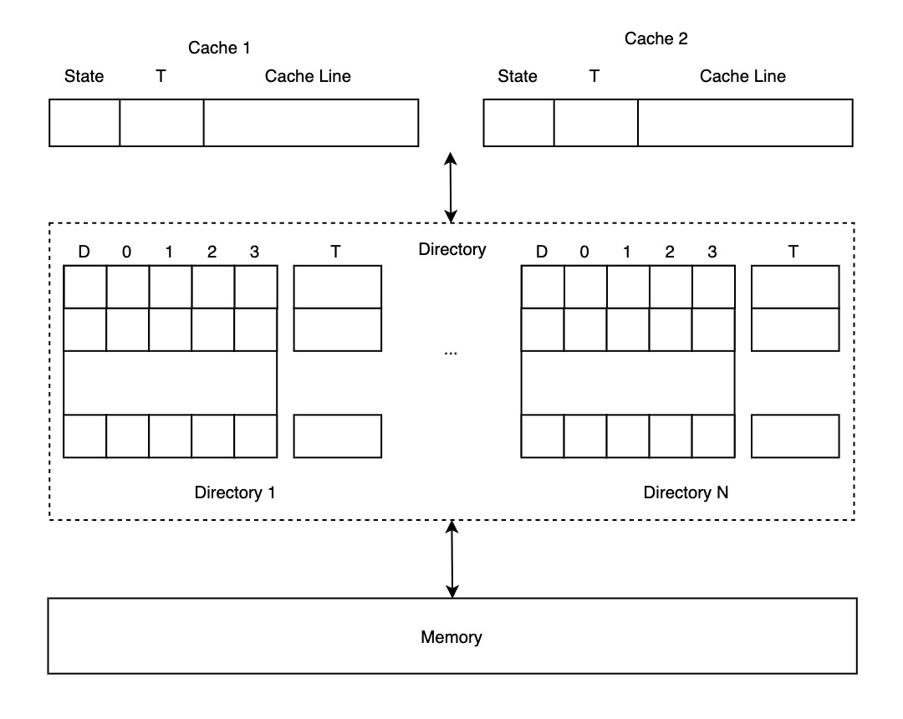
这种分片的思想也是解决分布式系统横向扩展性的利器，值得深思。
Cache Policy in Cache/DB Architecture
在 Web APP 开发中，通过引入缓存中间件 (redis/memcache) 来减少数据库压力是十分常见的做法，这时服务架构通常如下图所示：
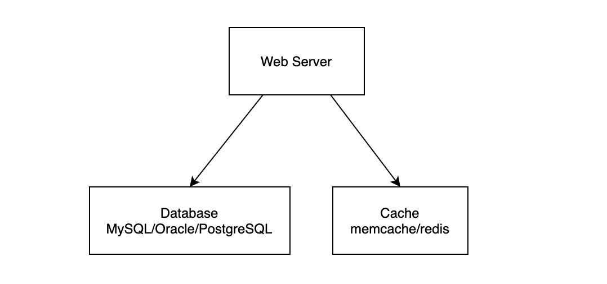
如何从 Cache 和 DB 读取、写入数据就是 Cache/DB Architecture 下的 Cache Policy。与单核 CPU 中的 Cache Policy 不同，由于 Web APP 通常会部署在多个实例上，实践中几乎总是有多个进程在并行地增删改查数据。这时 Web APP 中不同进程写 Cache、写 DB 的顺序可以用 "一切皆有可能" 来概括。如果要保证二者之间数据的绝对一致，则必须要有分布式事务的支持，但无论是实现难度，还是分布式事务下的写性能下降，都不是开发者所期望的。因此在 Cache/DB Architecture 中，我们对 Cache Policy 的要求可以概括为：
最终一致性：在写入 DB 之后，经过足够长的时间后总能访问到最近写入的数据
Data Inconsistency
经过简单分析，我们可以找到很多出现数据不一致的场景。
- 场景 1：假设写入数据时，先写 DB 后写 Cache：如果写 DB 成功，写 Cache 失败，那么 Cache 中就会继续保存着过时的数据。
- 场景 2：假设写入数据时，先写 DB 后写 Cache：如果有两个进程 A、B 同时执行写数据操作，有可能出现 A 写 DB、B 写 DB、B 写 Cache、A 写 Cache 的执行顺序，那么 Cache 中就会继续保存着过时的数据
- ...
Cache Policies
Policy 1：Cache Expiry
要实现 Cache/DB 中数据的最终一致，最简单的方式莫过于通过在 Cache 中为缓存数据设置过期时间，在经过这段时间后，会自动再次从数据库中重新加载数据，这样就能达到最终一致性。
这个方案的缺点也很明显，假如过期时间设置为 30 分钟，那么 Web APP 就需要容忍 30 分钟的数据不一致，这对很多服务来说几乎是无法接受的。当然，开发者可以把过期时间设短一些，但设得越短，读击穿到 DB 的频率也就越高，就和 Cache/DB Architecture 的初衷背道而驰。
Policy 2: Cache Aside
Cache Aside 的读写逻辑如下：
| 操作 | 逻辑 |
|---|---|
| 读取 | Cache Hit: 直接返回缓存数据 Cache Miss：从 DB 中加载数据到缓存，并返回 |
| 写入 | 写入 DB 将 Cache 中对应的数据删除 |
这种方法适用于大多数场景，它通常也是实践中的标准做法。当然，这种做法也并非完美：
- 假设有两个进程 A、B：A 写入 DB，B 读取数据，A 删除 Cache 中对应的数据，这时 B 读到了过时数据
- 假设有两个进程 A、B：B 从 DB 读取数据到内存，但未写入 Cache，A 写入 DB 并删除 Cache 中对应的数据，B 将内存中的数据写入 Cache，过时数据会一直存在于 Cache 中直到过期
- A 写入 DB 后被杀死，过时数据会一直存在于 Cache 中直到过期
- ...
上述做法也可以被称为 Write-Invalidate，即写入 DB 之后将 Cache 中对应的数据置为失效状态。为什么不使用类似 Write-Update 的做法？这样还能够节省一次 DB 与 Cache 之间的网络 I/O。写入 DB 后直接写入 Cache 的做法存在一个致命的场景：A、B 进程同时写入数据，其执行顺序如下：
- A 写入 DB
- B 写入 DB
- B 写入 Cache
- A 写入 Cache
好家伙，这下好了...
Policy 3: Read Through
Read Through 的读写逻辑如下：
| 操作 | 逻辑 |
|---|---|
| 读取 | 服务只管从 Cache 中读取数据，如果出现 Cache Miss，由 Cache 负责从 DB 中加载数据 |
| 写入 | 未指定 |
这时候服务架构如下图所示：
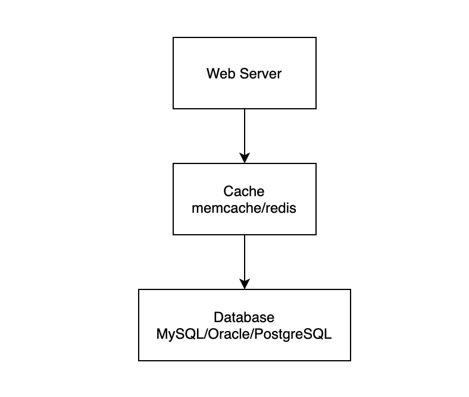
Read Through 的核心问题在于 Cache 需要支持逻辑嵌入，然而一般这种做法会导致运维、部署都不方便。
Policy 4: Write Through
Write Through 与 Read Through 类似，就是在写入时由 Cache 层负责写入 DB 中。这种方案的问题主要包括：
- Cache 需要支持逻辑嵌入，导致运维、部署不方便
- 通常持久性 (Durability) 不在 Cache 的设计目标中，因此在写入 DB 之前，数据有可能发生丢失
Poilicy 5: Double Delete
Double Delete 的读写逻辑如下：
| 操作 | 逻辑 |
|---|---|
| 读取 | Cache Hit：直接返回 Cache Miss：从 DB 中加载数据 |
| 写入 | 将 Cache 中对应的数据删除 写入 DB 等一小段时间，如 500ms 再次将 Cache 中对应的数据删除 |
其实它可以被理解成是 Cache Aside 的改进版，通过一段时间后的二次删除，避免因为并行问题导致 Cache 中的过时数据覆盖新写入数据的情况。
Policy 6：Write Behind
Write Behind 的读写逻辑如下：
| 操作 | 逻辑 |
|---|---|
| 读取 | 从 Cache 中读取数据 |
| 写入 | 将数据写入 Cache Cache 将写入操作记录投递到 MQ 中 异步进程消费 MQ 最终将数据写入 DB 中 |
这时候服务的架构如下图所示：
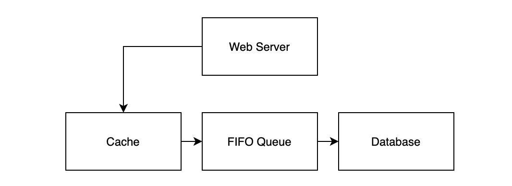
这种做法可以极大地提高读写吞吐量，但缺点也比较明显：
- Cache 需要支持逻辑嵌入，导致运维、部署不方便
- 使用的 MQ 必须是 FIFO 队列，否则将导致数据写入 DB 的顺序错误
Write Behind 还有一种变体，就是将写入的顺序调换：
| 操作 | 逻辑 |
|---|---|
| 读取 | 从 Cache 中读取数据 |
| 写入 | 将数据写入 DB DB 将写入操作记录投递到 MQ 中 异步进程消费 MQ 最终将数据写入 Cache 中 |
这时候服务的架构如下图所示：
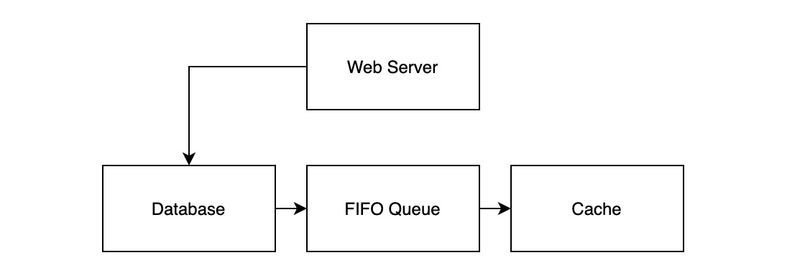
相较于原版 Write Behind，由于 DB 在复制的过程中已经实现了类似的 MQ，因此只需要开发解析复制日志的 DB 中间件，伪装成 Slave 节点，即可实现相应流程。整个架构中无需引入额外的 MQ，减少部署、运维成本。
Connections
本节，我们从连接数的角度观察一下 Cache/DB Architecture 中不同 Cache Policies 的架构。假设各上游服务与下游服务建立的连接池为固定大小 N。
考虑服务会被部署多个副本，在 Cache Expiry、Cache Aside 以及 Double Delete 中，架构中各节点间的连接状态如下图所示：
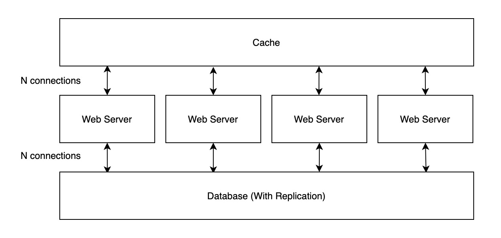
每个服务实例都需要与 DB、Cache 建立 N 个连接，由于其它服务也需要访问相同的 DB、Cache 集群，这时候就会出现极高的连接数。
在 Read-Through、Wright-Through 以及 Write-Behind 中，架构中各节点的连接状态如下图所示：
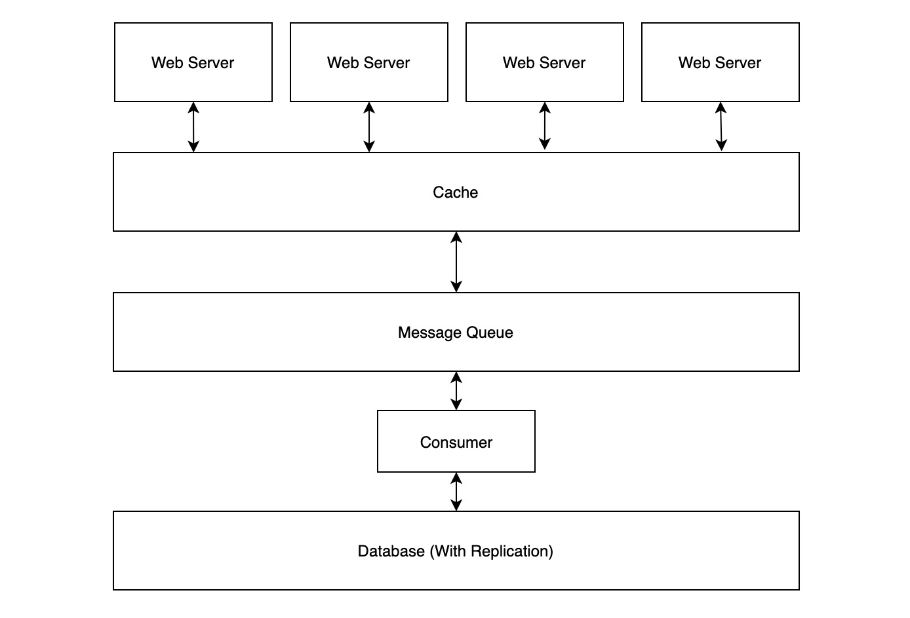
每个服务实例都需要与 Cache 建立 N 个链接，Cache 与 MQ、MQ 与 DB 之间都只需要建立 N 个链接。
在 Write-Behind 的变体中，解析复制日志的中间件只需要与数据库建立 1 个连接即可，如下图所示：
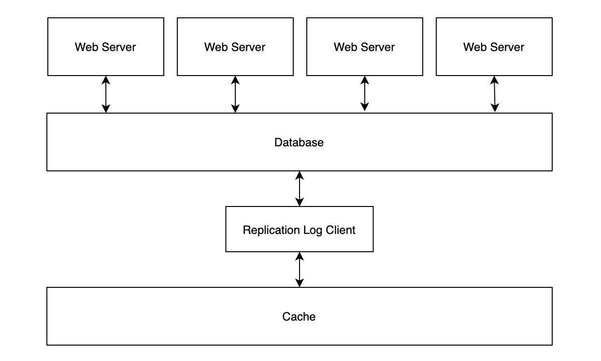
Cache Policy in Distributed DBMS Architecture
(TODO)
Summary
本小节列举了多种 Cache Policies，通常最常用的并不是设计最复杂的，具体场景需要具体分析，也许最简单的做法就能满足需求。Less code, less bugs : )。
转载请注明出处！
References
- Georgia Tech - HPCA: Lesson 15 & 24
- SienceDirect: Cache Coherence
- Wikipedia: Directory-based cache coherence
- Wikipedia: Directory-based coherence
- Wikipedia: Consistency Model
- Medium: Cache Coherence Problem and Approaches
- cs.utah.edu: Directory-Based Cache Coherence
- CSC/ECE 506 Sprint 2012/8a cj
- What Every Programmer Should Know About Memory
- CMU: Directory-Based Coherence I
- CMU: Directory-Based Coherence II
- CS4 /MSc Parallel Architectures
- Consistency between Redis Cache and SQL Database
- Read-Through, Write-Through, Write-Behind Caching and Refresh-Ahead
- High-Performance Caching with NGINX and NGINX Plus
- Improving cache consistentcy
- Scaling Memcache at Facebook